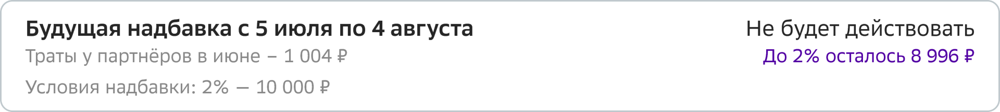
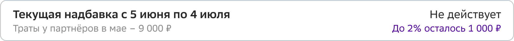

Редизайн раздела ставки и надбавок по вкладам
15 000 обращений в месяц. Сложные вопросы уходили на вторую линию и решались до трёх дней. После редизайна — решаются в рамках одного звонка

Раздел «Ставка и надбавки» после редизайна
15 000 обращений в месяц. Сложные вопросы уходили на вторую линию и решались до трёх дней. После редизайна — решаются в рамках одного звонка
Раздел «Ставка и надбавки» после редизайна
Раздел перестал быть узким местом в консультации: оператор может объяснить причины текущей ставки, посмотреть историю надбавки и разобрать конкретные операции — всё на одном экране, без переключений.
Во вкладах ставка складывается из базовой ставки и надбавок. Изначально логика была линейной: выполнил условие — получил надбавку на период его действия. Старый раздел делил надбавки на три таба — «Действующие», «Потенциальные» и «Архивные», и для простых надбавок этого хватало.
Со временем бизнес‑логика усложнилась: появились надбавки с отложенным действием (привязаны к периодам), взаимоисключающие наборы и различные правила применения в зависимости от вклада. Одна и та же надбавка теперь могла затрагивать сразу три периода — прошлый, текущий и следующий.
Смотреть это через три таба было неудобно: оператор не мог объяснить причины изменения ставки, работу надбавок и что клиенту нужно сделать, чтобы ставка выросла. Сложные вопросы оформлялись как отложенные обращения и уходили на вторую линию — на 1–3 дня.
Задача: редизайн раздела ставки и надбавок — чтобы оператор мог в рамках одного звонка объяснить, из чего складывается текущая ставка, почему она изменилась и что клиенту нужно сделать, чтобы она выросла.
Когда появились первые «сложные» надбавки с тремя периодами, стало ясно, что в старый раздел они не ложатся концептуально. Сначала мы сделали временное решение — показали сложные надбавки прямо в карточке вклада, чтобы не блокировать операторов. Но параллельно я инициировал полный редизайн раздела, потому что временная заплатка не масштабировалась.
Проанализировал ~30 записей звонков и провёл 3 глубинных интервью с операторами. Дополнительно изучил данные кликстрима в ClickSense.
Клиентов не интересует перечень надбавок сам по себе. Их вопросы почти всегда сводятся к одному из сценариев:
Для надбавок с отложенным действием клиенты почти всегда спрашивают про предыдущий, текущий и следующий периоды. В сложных случаях — про конкретные операции и причины, по которым они не были учтены.
Отдельно было важно изучить, как обновлённая логика надбавок реализована в мобильном приложении банка. Описание надбавок должно оставаться единым для клиентов и операторов, чтобы не требовать дополнительного «перевода» в ходе консультации.
Сначала я попробовал разместить действующие надбавки прямо в карточке вклада, чтобы оператор видел ставку и надбавки в одном месте без перехода в отдельный раздел.
На практике это перегружало экран и не давало общей картины: не было места для детализации по периодам, для доступных надбавок и для условий их применения.
Карточка вклада — не то место, где можно уместить всю глубину информации о надбавках. Нужен отдельный экран, но с другой архитектурой.
Один экран — полная картина
Оператор видит текущую ставку как сумму базовой ставки и действующих надбавок, а рядом — надбавки, которые могут увеличить ставку, и условия их применения.
Это устраняет лишние переходы и позволяет в рамках консультации легко менять уровень детализации — от ставки в целом до разбора конкретной надбавки.

Основной экран — текущая ставка, действующие надбавки и что можно увеличить


Два крайних состояния: максимальная ставка (все надбавки действуют) и базовая ставка без надбавок
Для надбавок, привязанных к периоду, отображаются предыдущий, текущий и следующий периоды. Оператор может объяснить, почему надбавка не действовала раньше, действует сейчас или будет применена в будущем.


Три периода одной надбавки — будущий, текущий и прошлый
При необходимости доступна детализация трат — с указанием операций, не участвующих в расчёте, и возвратов. Это закрывает самый частый сложный сценарий: клиент уверен, что потратил достаточно, а оператор может показать, какие именно операции не учитываются.

Детализация надбавки — три периода, предупреждение о неучитываемых покупках

Детализация до уровня конкретных операций — оператор видит возвраты и неучтённые покупки
Взаимоисключающие надбавки сгруппированы и снабжены пояснением механики применения. Оператор сразу видит, почему одновременно может действовать только одна надбавка, и объясняет это клиенту без дополнительных источников информации.

Группировка взаимоисключающих надбавок с пояснением механики
Архитектура раздела спроектирована так, что любая новая надбавка базово отображается без доработок — с названием, статусом и процентом. Для надбавок с особой логикой (периоды, детализация операций) нужна отдельная доработка, но она расширяет существующую структуру, а не ломает её.
После запуска уже добавлялись новые надбавки для других категорий клиентов — они легли в раздел без изменений интерфейса.

История надбавок — ретроспектива по периодам для разбора спорных ситуаций
Провёл юзабилити‑тестирование с 12 операторами контакт‑центра.
Формат: ролевая игра. Я выступал в роли клиента, оператор консультировал в новом интерфейсе.
Сценарий: клиент спрашивает, почему его ставка 14%, а не 18%, уверяет, что выполнил все условия надбавки. Оператор должен найти надбавку, которая не действует, разобраться в причине (оплата по СБП не учитывается в расчёте) и объяснить это клиенту.
Вопросы по надбавкам, которые раньше уходили на вторую линию и решались до трёх дней, стали закрываться в рамках одного входящего звонка.
Решение стало консистентным с мобильным приложением банка: описание надбавок и формулировки совпадают, оператору не нужно «переводить» для клиента.
Product Designer (end‑to‑end). Выявил, что новые типы надбавок не ложатся в существующий раздел, инициировал редизайн. Проанализировал ~30 записей звонков и провёл 3 интервью с операторами. Спроектировал информационную архитектуру, логику отображения всех типов надбавок, состояния и тексты. Провёл демо для команд надбавок, вкладов и СБОЛа. Протестировал с 12 операторами — 100% успех.
Раздел работает в проде
15 000 обращений в месяц. Сложные вопросы решаются в рамках одного звонка вместо 1–3 дней на второй линии